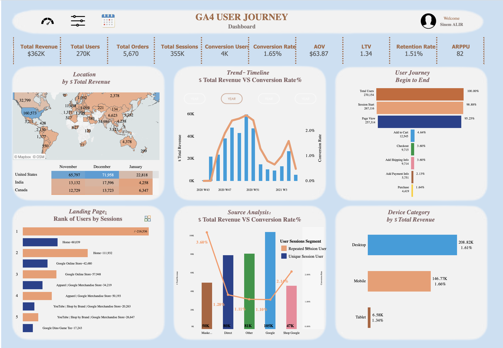

4. Proje – GA4 Kullanıcı Yolculuğu Analizi (Tableau + BigQuery)
Açıklama
Bu analiz, bir web sitesi ya da uygulama üzerinden gelen trafiğin Google Analytics 4 (GA4) verileriyle izlenmesini sağlar. Amaç, kullanıcıların ilk etkileşiminden (örneğin sayfaya giriş) son dönüşüme (örneğin satın alma) kadar olan tüm adımlarını anlayarak dönüşüm oranlarını artırmak ve kullanıcı deneyimini iyileştirmektir.
Bu analiz ne kazandırır?
- Ziyaretçiler hangi kaynaktan geliyor, hangi sayfalarda daha fazla vakit geçiriyor, nerelerde çıkıyor sorularının yanıtlarını verir.
- En sık gerçekleşen kullanıcı yolları analiz edilerek kullanıcı davranışı anlaşılır.
- Kullanıcıların hangi trafik kaynağından geldiğinde daha çok dönüşüm yaptığı tespit edilir.
- En yüksek gelir getiren cihazlar, lokasyonlar ve trafik kaynakları kolayca görselleştirilir.
- Retention (geri dönüş) analizi ile kullanıcı sadakati hakkında net bilgiler sunar.
Sonuç: Bu analiz, pazarlama stratejilerini optimize etmek, dönüşüm oranlarını artırmak ve ziyaretçileri müşteriye dönüştürmek isteyen tüm markalar için güçlü bir araçtır.
Öneriler
- Dönüşüm oranı yüksek trafik kaynaklarına daha fazla bütçe ayrılmalı.
- En çok terk edilen sayfalar iyileştirilmeli (sayfa hızı, içerik, CTA butonları gözden geçirilmeli).
- Sadık kullanıcıların yoğunlaştığı bölgelerde yerelleştirilmiş içerik ve kampanyalar sunulmalı.
- Mobil cihazlarda düşük performans varsa sayfa deneyimi ve yüklenme süreleri optimize edilmeli.
- Hedef sayfalara ulaşmadan çıkan kullanıcılar için retargeting kampanyaları yapılmalı.
- Geri dönüş oranı düşük kullanıcı segmentleri için onboarding (ilk kullanıcı eğitimi) süreçleri geliştirilmeli.
Teknik Analiz
Kullanılan Araçlar:
- Google BigQuery – GA4 veri setinden event bazlı çekim
- Tableau Public – Kullanıcı yolculuğunu görselleştirme
Veri Yapısı:
- GA4
eventstablosu: session_start, page_view, click, purchase vb. user_pseudo_id,device,geo,traffic_sourcealanları
Dashboard Bileşenleri:
- Kullanıcı Yolculuğu Akışı (Funnel / Sankey / Step Chart)
- session_start → page_view → engagement → purchase adımlarında kullanıcı sayıları ve oranlar
- Dönüşüm oranları ve adım atlama oranları
- Trafik Kaynağına Göre Dönüşüm Oranları (Bar / Heatmap)
traffic_source.source,medium,campaignile performans- En verimli kampanya ve kanalların tespiti
- Cihaz Türüne Göre KPI’lar
device.categorybazlı AOV, conversion rate, session duration- Mobil vs desktop farkları
- Lokasyon Bazlı Gelir ve Dönüşüm Analizi (Map + KPI)
geo.country,geo.regionbazlı kullanıcı ve gelir- Bölgesel önceliklendirme için temel
- Retention / Kullanıcı Sadakati Analizi
- 1., 7., 30. gün geri dönüş oranları (Line + Donut)
- Sadık kullanıcı segmentlerinin tespiti
Etkileşimli Özellikler: Tüm grafikler tarih, trafik kanalı, cihaz ve lokasyon filtrelerine duyarlıdır. Hover ile detaylı tool-tip’ler ve segment karşılaştırmaları sağlanır.
Kullanılan Araç Rozeti:
Tableau